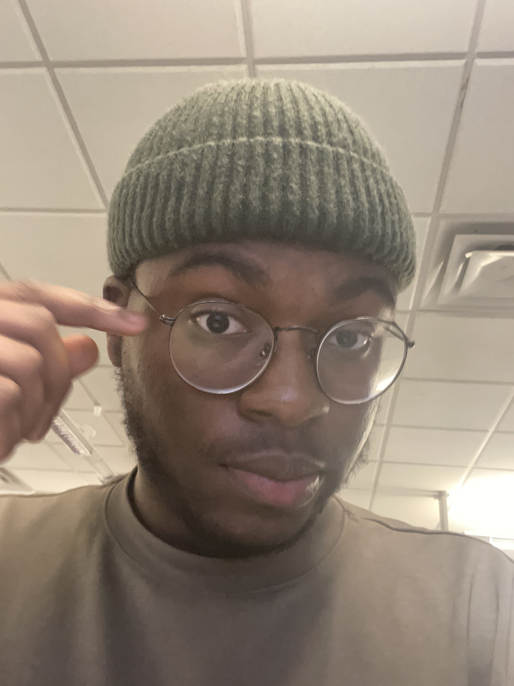

Toluwanimi E. Akinroye

Summary
I am a third year student at the University of Alberta studying computing science and web design on the side.
Education
Secondary School
- Corona Secondary School (2015 - 2021)
Post-Secondary School
- University of Alberta
Bsc Honors - Computing Science (Third Year)
Volunteer Work Experience
Student Team for Alberta Rocketry Research (Software Team)🚀
September 2023 - Present
-
Gained proficiency in front-end and back-end web development using Javascript, Node.js, and React respectively to aid the creation of the orgranization's website.
-
Worked closely with my team to design and implement responsive web interfaces that provide an optimal user experience across various devices and screen sizes.
-
Gained profiency in Git and GitHub for efficient collaboration and code management within the team.
Team Lead(iGT) AIESEC | University of Alberta
May 2023 - Present
-
Work closely with a diverse team to achieve common goals and objectives. Participating in team meetings, sharing best practices, and contributing to the continuous improvement of iGT processes.
-
Conduct initial screenins of resumes and applications to shortlist candidates for internships and volunteer.
-
Work closely with my team to provide guidance and support to selected candidates throughout the preparation process, including visa applications, travel arrangements, and cultural applications.
Peer Tutor | University of Alberta
September 2023 - Present
-
Demonstrated mastery of a wide range of mathematical topics, including calculus, linear algebra, discrete mathematics, and mathematical statistics.
-
Successfully guided students to achieve significant grade improvements and a deeper understand of mathematical principles through personalized tutoring sessions.
-
Established an open and approachable tutoring atmosphere, encouraging students to ask questions, seek clarification, and express their challenges without hesitation.
Skills
-
Proficient in CSS, Javascript, Python, HTML, SQL, and C as well full-stack development tools like APIs, React, and Node.js.
-
Excellent verbal and written communication skills with a focus on team cooperation.
-
Excellent multitasking, problem-solving, and organization skills.
Other